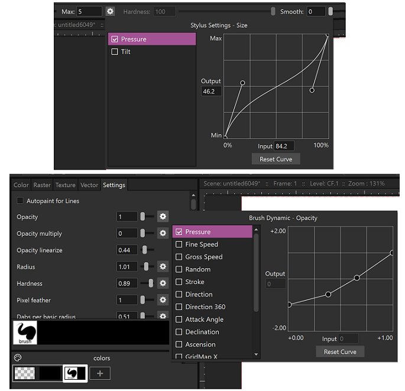

Standard Brushes support Tilt as well as Pressure.
- All level types support changing size based on tilt and pressure.
- Standard raster additionally supports changing opacity based on tilt and pressure.
- Adjust tilt and pressure curves to your liking.
Customize the Brush Dynamics of MyPaint Styles
- Change how the MyPaint style behaves based on how you handle your stylus.
